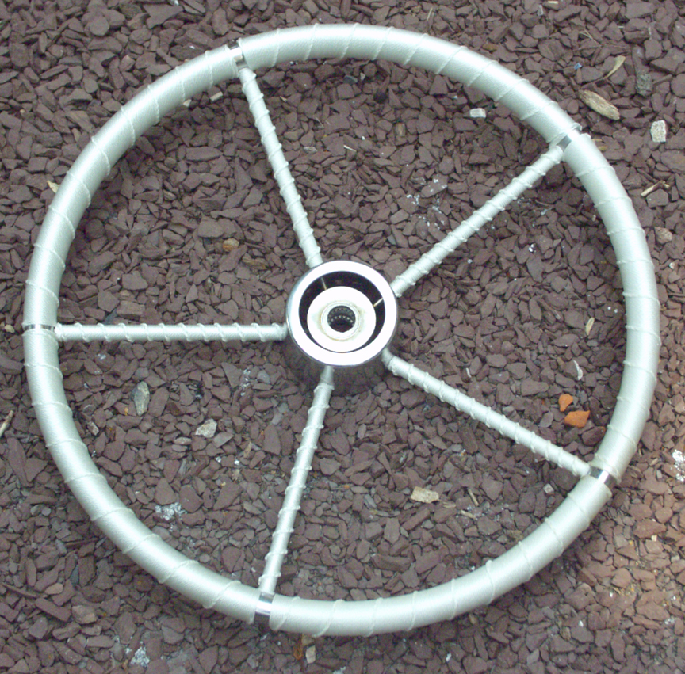
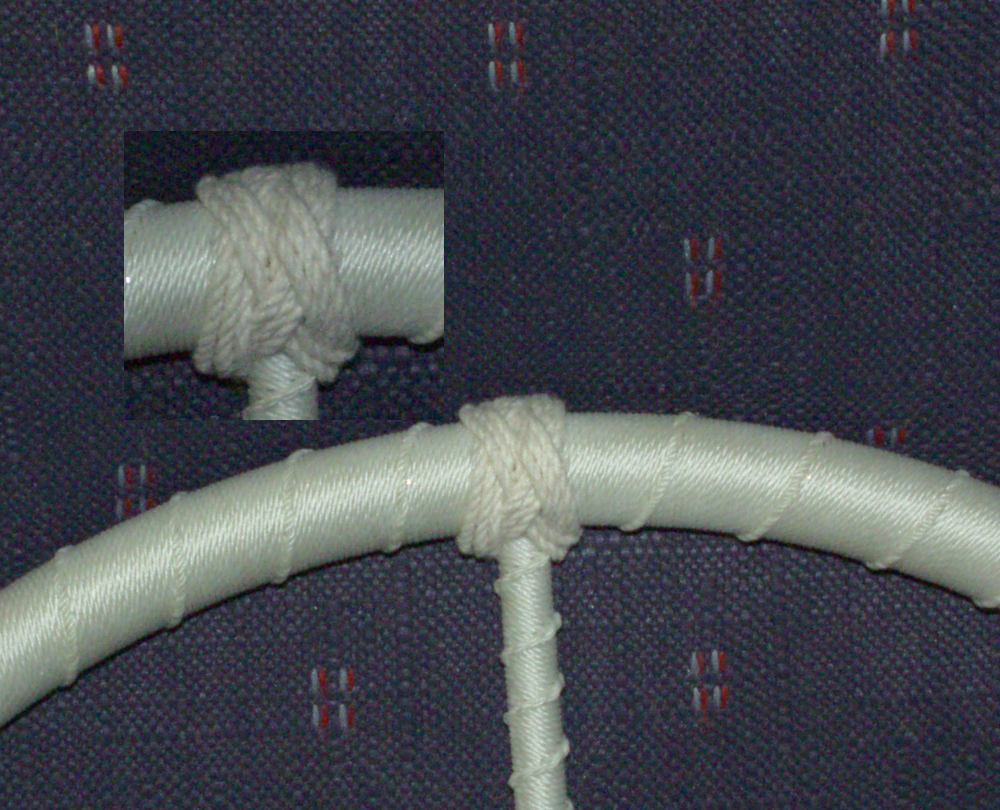
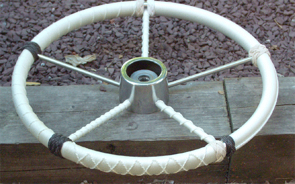
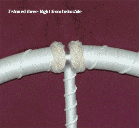

Wheel flemished with "running" or "French" coxcombing but with no finial turksheads installed
Four-strand turk covering both sides of the gap where the stanchion meets the rim. Not my favourite as the knot always comes out looking "crowded"
Some of the variations available on a wheel. Click on the picture for some closeups.
Another finishing method: Three-bight turksheads ending off the rim coxcombing. Note that they are mirror-images of each other... No small accomplishment!
